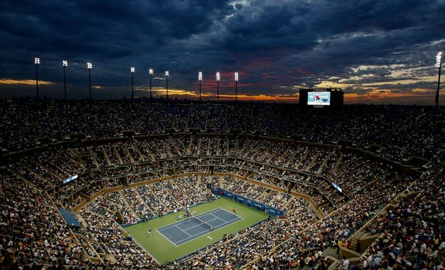
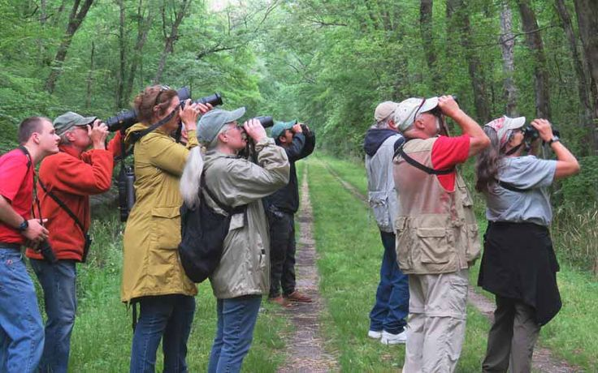

Projects

🎾 Game Analytics – Tennis Data
- Built an end-to-end analytics pipeline using SportRadar API.
- Designed optimized SQL queries for rankings and competitions.
- Developed Streamlit dashboards for real-time insights.
Python, SQL, EDA, Streamlit
View Project

🦉 Bird Species Observation Analysis
- Cleaned and standardized multi-ecosystem bird datasets.
- Performed EDA on seasonal and habitat patterns.
- Built dashboards using Streamlit and Power BI.
Python, SQL, EDA, Power BI
View Project
🌾 Crop Production Prediction
- Preprocessed FAOSTAT agricultural datasets.
- Performed EDA on crop productivity trends.
- Built regression model with Streamlit deployment.
Python, ML, EDA, Streamlit
View Project🌍 Tourism Experience Analytics
- Engineered features from tourism datasets.
- Built classification & regression models.
- Delivered predictions via Streamlit app.
Python, ML, EDA, Streamlit
View Project🔆 SolarGuard – Defect Detection
- Preprocessed solar panel image datasets.
- Trained CNN models for defect classification.
- Deployed Streamlit-based inspection tool.
Python, CNN, TensorFlow
View Project🖼️ Image Caption Generator
- Preprocessed images and captions for training.
- Built CNN encoder + LSTM decoder.
- Evaluated using BLEU & METEOR scores.
Python, CNN, LSTM
View Project